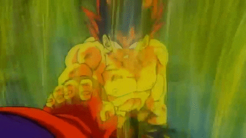

FALSE SUPERSAIYAN
The False Super Saiyan is a transformation in *Dragon Ball Z: Lord Slug* that resembles the
true Super Saiyan form but is weaker and unstable.
Goku briefly transforms into this state due to intense emotions like rage.
While it features golden hair and an aura, the power boost is much lower than a true Super
Saiyan, and it lacks the same control.
The form is considered a "fake" version of the Super Saiyan transformation and is not part
of the main *Dragon Ball* continuity.
SUPERSAIYAN
The Super Saiyan is a transformation in Dragon Ball Z:"Frieza Saga" He transforms out off
anger
hele coole titel
nog een hele coole titel
hele coole titel
nog een hele coole titel